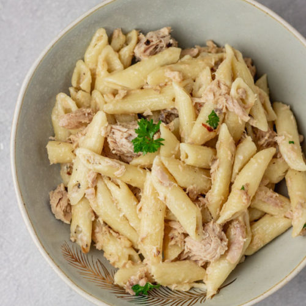

Tuna Pasta

Description
For a quick and straightforward muscle-building meal, try this easy tuna protein pasta recipe.
With just a few simple ingredients, it provides a hearty dose of protein and carbs to
support your bodybuilding goals without sacrificing taste or time.
Perfect for busy days when you need a nutritious meal in minutes.
Ingredients
- 1 can (5 oz) of tuna in water, drained
- 2 cups pasta of your choice (such as penne or spaghetti)
- 1 tablespoon olive oil
- 2 cloves garlic, minced
- Salt and pepper to taste
- Optional: grated Parmesan cheese for topping
Steps
- Cook the pasta according to the package instructions until al dente. Drain and set aside.
- In a large skillet, heat the olive oil over medium heat. Add the minced garlic and sauté for 1-2 minutes until fragrant.
- Add the drained canned tuna to the skillet and break it up with a fork.
Cook for 2-3 minutes, stirring occasionally, until heated through.
- Season the tuna with salt and pepper to taste, adjusting the seasoning as needed.
- Add the cooked pasta to the skillet with the tuna and toss everything together until well combined.
- Remove the skillet from the heat and transfer the tuna pasta to serving plates.
- If desired, sprinkle grated Parmesan cheese on top of each serving for extra flavor.
- Serve immediately and enjoy your easy tuna protein pasta as a quick and satisfying muscle-building meal.
This recipe serves 2 and can be easily doubled or halved depending on your needs.
Feel free to customize it by adding your favorite vegetables or herbs for extra flavor and nutrients.